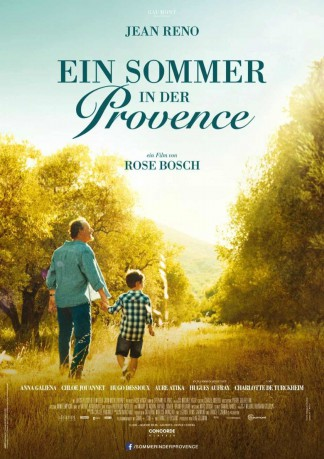

#70 Ein Sommer in der Provence
 gesehen am 13.08.2015
gesehen am 13.08.2015
 
 IMDB-Wertung: 6.6 / 10
IMDB-Wertung: 6.6 / 10  Metascore: 0
Metascore: 0 
Für Léa, Adrien und ihren kleinen Bruder Théo stehen die Ferien vor der Tür. Dieses Jahr fahren sie das erste Mal zu ihrem Großvater Paul, den sie wegen eines Familienstreits nie zuvor kennengelernt haben. Das Reiseziel – die Provence: Wohl kaum der Urlaub, von dem die Drei träumen. Auch die Freude von Großmutter Irène über diesen Familienurlaub ist da kein Trost. Hinzu kommt, dass ihnen der Vater ausgerechnet am Tag vor der Abreise sagt, dass er die Familie verlassen wird. Also nicht gerade die besten Aussichten auf gute Laune und eine spaßige Ferienzeit.
Jahr: 2014
Dauer: 105 Minuten
FSK: 6
Land: Frankreich Studio: Concorde FilmverleihTonspuren:
Untertitel:
Auflösung: 1080p (1920×800) Größe: 5754 MB
Genre: Drama, Liebe
Regisseur: Rose Bosch
Drehbuch: Rose Bosch
Soundtrack: Ludovic Bruni
Darsteller:
 Jean Reno als Paul
Jean Reno als Paul- Anna Galiena als Irène
 Aure Atika als Magali
Aure Atika als Magali- Charlotte de Turckheim als Laurette
- Chloé Jouannet als Léa
- Hugo Dessioux als Adrien
- Lukas Pelissier als Théo
- Tom Leeb als Tiago
- Jean-Michel Noirey als Jean-Mi
- Hugues Aufray als Elie
- Fabien Baïardi als Capitaine Marangoni
- Laurent Fernandez als Momo
- Rodolphe Saulnier als Docteur Chasson
- Oussama Abassa als Sofiane
- Joris Zapiain als Kevin
- Michel Drucker als Michel Drucker
- Patrick Cottet-Moine als Le postier
- Andy Robert als Matthieu
- Jeremy Mercer als L'Anglais
- Jean-Marc Ravera als Marchand marché
- Tiphaine Pitoizet als Jeune fille anglaise
- José Fernandez als Musicien
- Manuel Fernandez als Musicien
- Raphaël Fernandez als Musicien
- Raphaëlle Agogué als Émilie
 Jean-Pierre Lorit als Le père d'Adrien
Jean-Pierre Lorit als Le père d'Adrien- Franck Crouzet als Franck
- Hedvig Markgren als Sonya
- Anya Stenberg als Ingrid
- Nicole Baculard als Nini
- Gérard Mangiavillano als Gérard l'agriculteur
Datei: X:\2014(N-Z)\Sommer in der Provence, Ein (2014, FSK6, 1920x800).mkv seit 02.02.2015
Festplatte: HD 2013(I-Z)-2014(A-Z)
 Es gibt insgesamt 163 Filme in der Gruppe '2014(N-Z)'
Es gibt insgesamt 163 Filme in der Gruppe '2014(N-Z)'